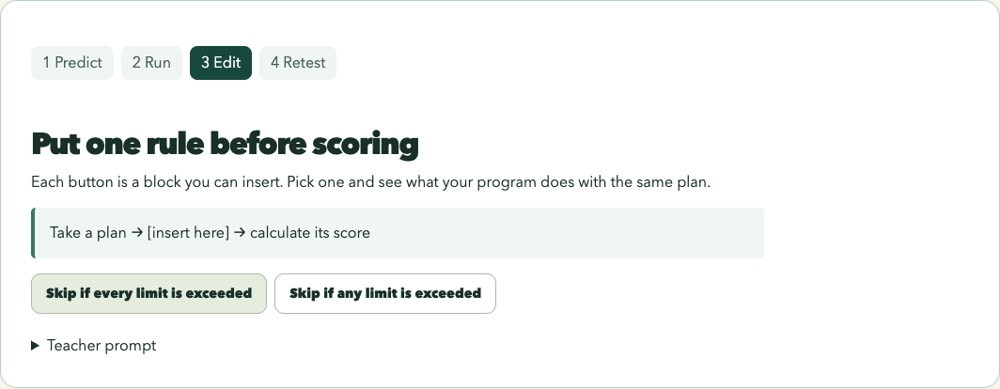

ECO QUEST / Campus Eco Fair · Foundation · About 5 minutes
Teach one block at the campus fair
Pikachu wants to turn reclaimed paper into bookmarks and notebooks. The class has 16 person-hours. One bookmark batch takes one hour and one notebook batch takes two. Learners will teach the computer to check resources before it scores a plan’s goal shortfalls.
Ask “Can we make one bookmark batch and eight notebook batches?” Students calculate 1 + 2 × 8 = 17 hours with only 16 available. Choose “Skip this plan.”
Run
The starter scores this plan 0.25. Ask students to point to the empty slot in the diagram. Click “Fill the empty slot.”
Edit
Choose “Skip if every limit is exceeded.” The score stays at 0.25 because the budget fits and only the time limit is exceeded. Try “Skip if any limit is exceeded.” The same plan is now skipped.
Retest
Click “Run the legal plan.” Two bookmark batches and seven notebook batches take exactly 16 hours and fit the other resources. The program scores this plan 1. Choose “Save my test record.”

Each button inserts an executable instruction into the slot and runs the edited program.